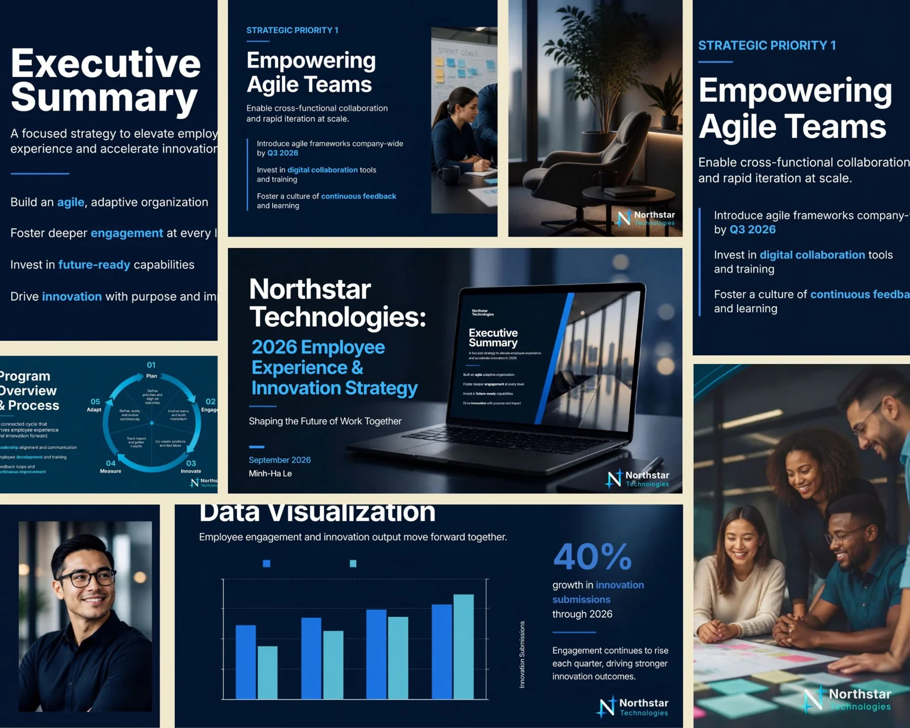
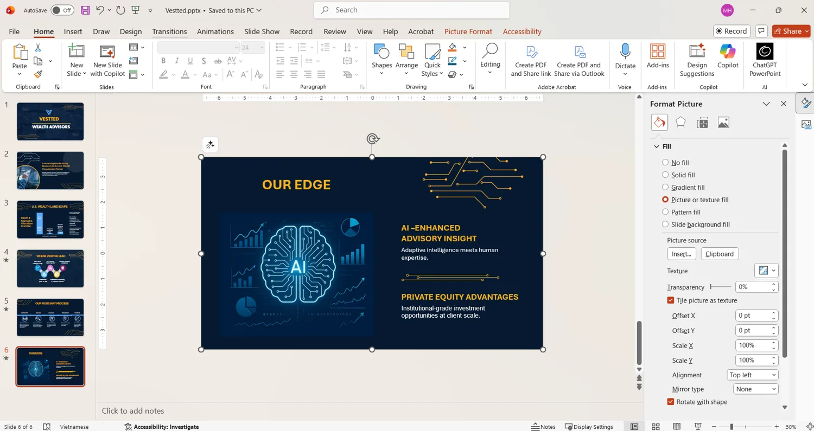
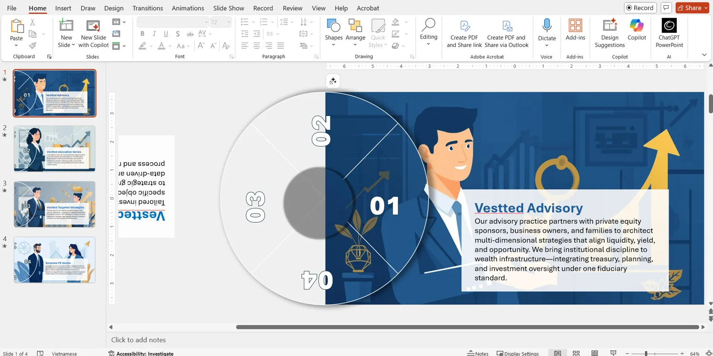
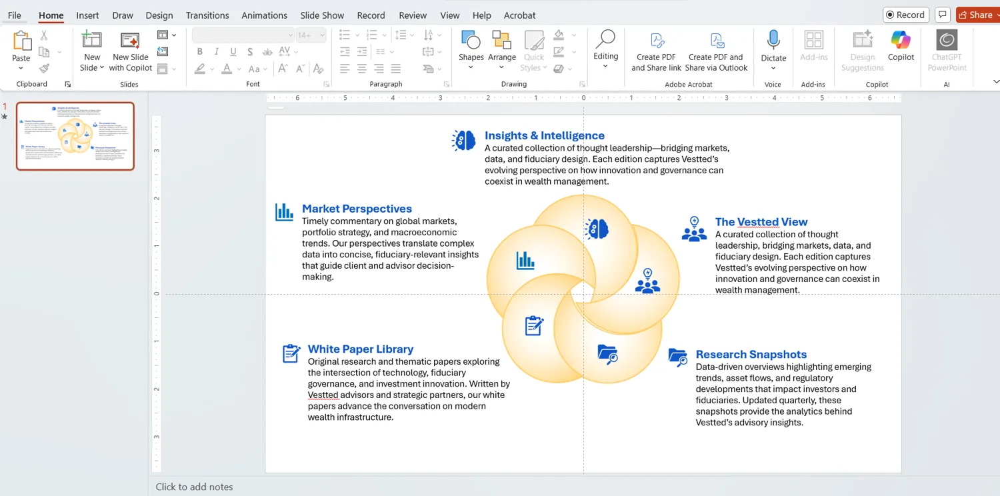
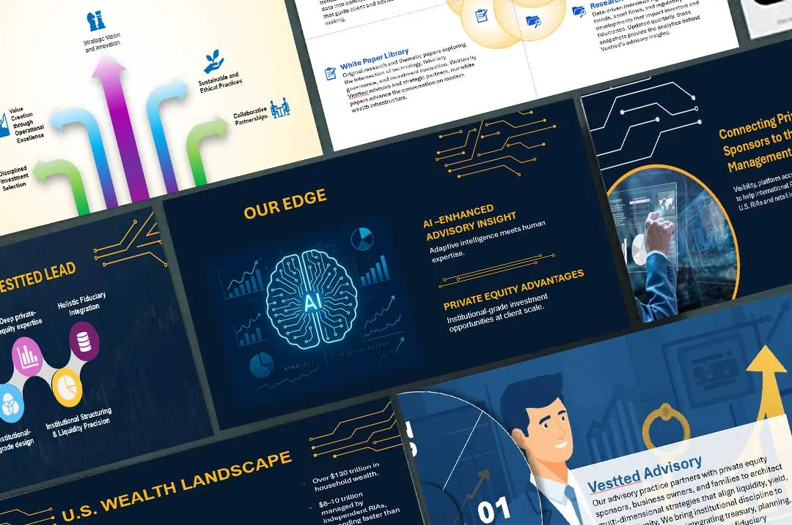
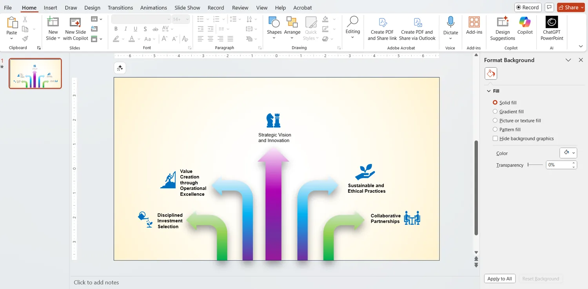

Audience-first narrative
Shape information into a logical sequence that supports the intended message and audience.
SELECTED WORK / PRESENTATION DESIGN & INFORMATION DESIGN
Strategic presentations and information graphics that turn complex ideas into clear, engaging narratives—designed for executive audiences, stakeholder communications, and digital storytelling.
01 / PORTFOLIO OVERVIEW
From strategy decks to financial-services presentations and concise infographics, this selection highlights a presentation design approach grounded in purposeful visual hierarchy, brand consistency, and audience-focused communication.
Each piece is designed to help viewers understand the message quickly, follow the narrative, and focus on the information that matters.
02 / FEATURED PRESENTATION
A self-initiated, fictional executive communications concept exploring how strategic priorities, employee engagement metrics, and an implementation roadmap can become a cohesive, easy-to-follow presentation.

Executive strategy / concept project
The ten-page deck presents strategic priorities, employee engagement statistics, innovation data, and a 2026 roadmap through a consistent branded system.
View full presentation ↗Concept project: organizations, names, and data are fictional. The PDF link uses the existing website asset path.


03 / PRESENTATION COLLECTION
A selection of branded PowerPoint work for Vestted, translating advisory services, market perspectives, and investment positioning into engaging presentation formats.

Vestted / Brand presentation
Dark navy backgrounds, precise gold accents, technical imagery, and concise content create a cohesive story across the presentation.

Vestted / Service presentation
Illustrated characters, a consistent blue palette, and structured messaging help organize the firm's service offerings into a memorable visual sequence.
Vestted / Insights & intelligence
Information is organized into clearly labeled categories, supported by icons and a central overlapping-circle graphic.


04 / INFORMATION DESIGN
A single-slide information graphic using directional arrows, color, and icons to connect strategic vision with operational excellence, investment selection, collaboration, and ethical practices.
PowerPoint / Information design
Distinct arrow paths bring related ideas together in a central visual while keeping each supporting message readable.

05 / DESIGN APPROACH
Shape information into a logical sequence that supports the intended message and audience.
Use consistent typography, spacing, imagery, and branded components across slides.
Balance concise copy, clear labeling, contrast, and data presentation to improve readability.
EXPLORE MORE
Brand Identity & Investor Communications ↗ · Northstar Brand Identity ↗ · Infographics & Data Visualization ↗